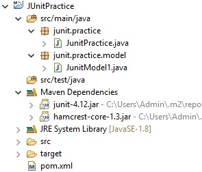
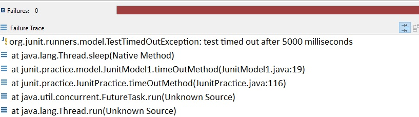

C:>mvn archetype:generate -DgroupId=junit.practice -DartifactId=JUnitPractice -Dversion=1.0-SNAPSHOT -DarchetypeArtifactId=maven-archetype-quickstart -DinteractiveMode=false

<dependency>
<groupId>junit</groupId>
<artifactId>junit</artifactId>
<version>4.12</version>
</dependency>
<project xmlns="http://maven.apache.org/POM/4.0.0" xmlns:xsi="http://www.w3.org/2001/XMLSchema-instance" xsi:schemaLocation="http://maven.apache.org/POM/4.0.0 http://maven.apache.org/maven-v4_0_0.xsd">
<modelVersion>4.0.0</modelVersion>
<groupId>junit.practice</groupId>
<artifactId>JUnitPractice</artifactId>
<packaging>jar</packaging>
<version>1.0-SNAPSHOT</version>
<name>JUnitPractice</name>
<url>http://maven.apache.org</url>
<dependencies>
<dependency>
<groupId>junit</groupId>
<artifactId>junit</artifactId>
<version>4.12</version>
</dependency>
</dependencies>
<build>
<pluginManagement>
<plugins>
<plugin>
<groupId>org.apache.maven.plugins</groupId>
<artifactId>maven-compiler-plugin</artifactId>
<version>3.5.1</version>
<configuration>
<source>1.8</source>
<target>1.8</target>
<showDeprecation>true</showDeprecation>
<showWarnings>true</showWarnings>
<compilerArgument>-parameters</compilerArgument>
<compilerArgument>-Xlint:all</compilerArgument>
</configuration>
</plugin>
</plugins>
</pluginManagement>
</build>
</project>
package junit.practice.model;
public class JunitModel1 {
public String method1() {
return "Hello World";
}
public String exceptionMethod(boolean flag) throws Exception {
if (flag) {
throw new RuntimeException("JUnitModel1 -> exceptionMethod(" + flag + ")");
} else {
return "No Exception";
}
}
}
import junit.practice.model.JunitModel1;
import org.junit.Assert;
import org.junit.Test;
@Test
public void method1() {
JunitModel1 jUnitModel1 = new JunitModel1();
String actual = jUnitModel1.method1();
Assert.assertEquals("Hello World", actual);
Assert.assertNotEquals("Hello", actual);
}
package junit.practice.model;
public class JunitModel1 {
public String exceptionMethod(boolean flag) throws Exception {
if (flag) {
throw new RuntimeException("JUnitModel1 -> exceptionMethod(" + flag + ")");
} else {
return "No Exception";
}
}
}
import junit.practice.model.JunitModel1;
import org.junit.Test;
@Test(expected = RuntimeException.class)
public void exceptionMethodExceptionCase() throws Exception {
JunitModel1 jUnitModel1 = new JunitModel1();
jUnitModel1.exceptionMethod(true);
}
import org.junit.After;
import org.junit.Before;
import org.junit.Test;
@Before
public void setup() {
System.out.println("JunitPractice -> setup()");
}
@After
public void teardown() {
System.out.println("JunitPractice -> teardown()");
}
@Test
public void beforeAfterMethod1() {
System.out.println("JunitPractice -> beforeAfterMethod1()");
}
@Test
public void beforeAfterMethod2() {
System.out.println("JunitPractice -> beforeAfterMethod2()");
}
JunitPractice -> setup()
JunitPractice -> beforeAfterMethod1()
JunitPractice -> teardown()
JunitPractice -> setup()
JunitPractice -> beforeAfterMethod2()
JunitPractice -> teardown()
import org.junit.AfterClass;
import org.junit.BeforeClass;
import org.junit.Test;
@BeforeClass
public static void setupClass() {
System.out.println("JunitPractice -> setupClass()");
}
@AfterClass
public static void teardownClass() {
System.out.println("JunitPractice -> teardownClass()");
}
@Test
public void beforeAfterClassMethod1() {
System.out.println("JunitPractice -> beforeAfterClassMethod1()");
}
@Test
public void beforeAfterClassMethod2() {
System.out.println("JunitPractice -> beforeAfterClassMethod2()");
}
JunitPractice -> setupClass()
JunitPractice -> beforeAfterClassMethod1()
JunitPractice -> beforeAfterClassMethod2()
JunitPractice -> teardownClass()
public void timeOutMethod() {
try {
Thread.sleep(1000 * 10);
} catch (InterruptedException e) {
e.printStackTrace();
}
}
/**
* timeout practice
* timeout - we need to give in milli seconds. So below case will check for 5 seconds
*/
@Test(timeout = 5 * 1000)
public void timeOutMethod() {
JunitModel1 junitModel1 = new JunitModel1();
junitModel1.timeOutMethod();
}
